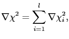

Next: The value, gradient, and Up: Values, gradients, and Hessians Previous: Construction of the Hessian Contents Index
The dependency chain which was outlined in the model-free chapter - that the chi-squared function is dependent on the transformed relaxation equations which are dependent on the relaxation equations which themselves are dependent on the spectral density functions - combine with the values, gradients, and Hessians to create a complex web of dependencies. The relationship between all the values, gradients, and Hessians are outlined in Figure  .
.
|
 |